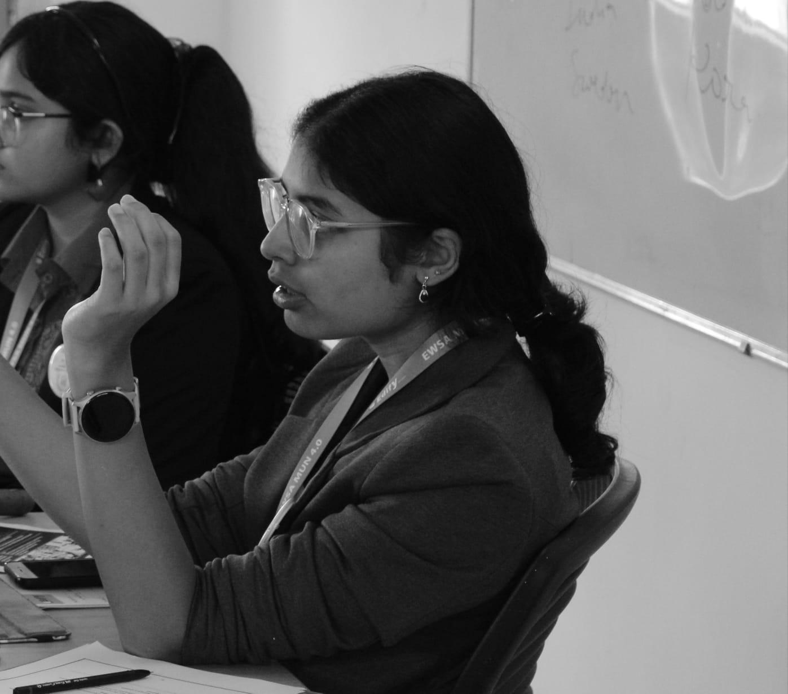

About the Committee
The Junior United Nations Commission on the Status of Women empowers young delegates to address global challenges affecting women and girls. Through diplomacy and collaboration, participants debate issues such as gender equality, education, healthcare, and women's empowerment while developing public speaking, negotiation, and leadership skills in a beginner-friendly MUN environment.
Agenda
Addressing gender-based discrimination with special focus on access to education, cultural autonomy and political representation in developing nations.
Background Guide
Executive Board

Vice-Chairperson: Mahika Tyagi
Mahika Tyagi, a 12th grader at DPS Hyderabad, entered the MUN circuit four years ago and has since participated in numerous conferences, winning several awards and earning recognition for her energetic and passionate debating. With a deep commitment to international relations and human rights, she loves fighting for what’s right. Outside the world of MUNs, Mahika can often be found raving about Formula 1 or acting like Spotify is her second home. A proud extrovert, she’s always up for meeting new people, making terrible jokes, and somehow finding someone to laugh at them. As Vice-Chair, she’s committed to ensuring that this edition of DPSH MUN is both a meaningful and enjoyable experience for every delegate.

Vice Chairperson: Akshaini Sinha
Akshaini is a Grade 12 student at DPS Khajaguda, Hyderabad, with extensive experience across MUN roles, from delegate to Secretariat to executive board. She brings a calm, structured presence to committee proceedings, paired with a knack for clear communication and subtle humor. Outside MUNs, she finds joy in reading, cooking, and badminton, pursuits that reflect her curiosity, discipline, and creative spirit. As rapporteur, she’s committed to fostering thoughtful debate and a collaborative, enriching experience for every delegate.